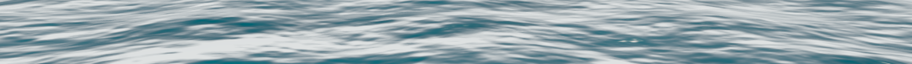
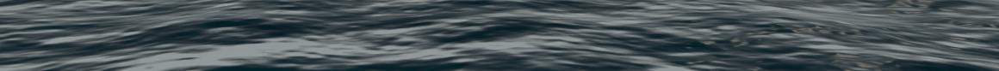
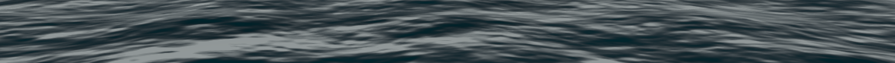

Compatibility fallback water
Same paused wave time and Water level camera. Ground, nature, village and fog hidden; these water-only crops show the effect of native Night and Low sun lighting.
Regression report · Capture settings


